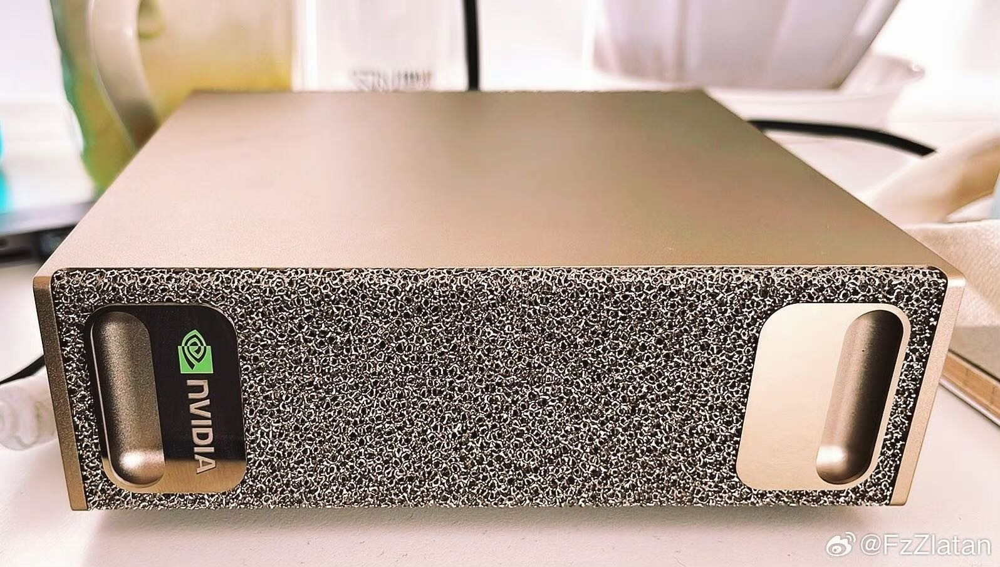

拿到手玩了一周，聊聊真实感受。

NVIDIA DGX Spark - 铝合金机身和网状纹理面板
外观：老 MacBook Pro 既视感
第一眼看到就想起 2017款的 MacBook Pro，那种铝合金 CNC 一体成型的质感。
- 整块铝合金，手感很实，拿起来有分量
- 圆角处理得很舒服，不割手
- 玫瑰金色网状纹理涂层，摸起来细腻，不怎么留指纹
- 竖向排列的 NVIDIA logo 很惊艳
- 散热孔排列整齐，工业设计在线
放桌面上不张扬，但也不低调。专业工具的感觉，我挺喜欢的。
硬件：GB10 Grace Blackwell 统一显存架构
这台机器用的是 NVIDIA 的 GB10 Grace Blackwell Superchip，核心亮点是 CPU 和 GPU 共享一个巨大的统一显存池。
配置
# 系统信息
Chip: GB10 Grace Blackwell Superchip
CPU: ARM Grace CPU
GPU: Blackwell GPU (integrated)
Unified Memory: 128GB
AI Performance: 最高 1 petaFLOP (FP4)
OS: Linux ARM64 (aarch64)
统一显存是什么？
简单说：
- CPU 和 GPU 用同一块内存，不需要通过 PCIe 搬数据
- 跑大模型的时候，128GB 内存都能用，不用担心显存不够
- 官方数据：推理支持最高 200B 参数模型，微调支持 70B
- 代码里不用写
.cuda()，GPU 和 CPU 直接共享数据
注意：统一显存不等于独立显卡。带宽和延迟特性不一样， 更适合推理和轻量微调，不太适合大规模分布式训练。
痛点：ARM 生态不成熟
这是最折腾的地方。硬件很强，但软件生态还是有点坑。
遇到的问题
- Docker 镜像少 — 很多预构建的镜像只有 x86 版本，得自己编译 ARM64 版本
- 依赖库缺失 — 有些老的 C++ 扩展和学术代码库根本没有 ARM 支持
- 开源项目适配慢 — GitHub 上很多项目只提供了 x86的编译方式，ARM 编译经常报错
- 工具链不全 — Anaconda、ROS、某些仿真软件的 ARM 版本要么没有，要么功能残缺
常见的报错：
# 这种错误见多了
$ pip install some-old-package
ERROR: No matching distribution found for some-old-package (aarch64)
# 只能从源码编译
$ git clone https://github.com/xxx/xxx
$ python setup.py install --build-from-source
# 然后等半小时...
怎么解决？
- 用 conda-forge — ARM64 支持比 PyPI 好一些
- Docker buildx — 多架构构建，但编译很慢
- 从源码编译 — 准备好时间和耐心
- QEMU 虚拟化 x86 — 救急用，性能很差
实话说：如果你的工作严重依赖老的开源工具， 或者学术代码库，现在买 x86 机器还是更省心。
总结：适合谁？
推荐买的人
- 主要跑本地大模型推理
- 用 PyTorch/TensorFlow 这些主流框架
- 能接受折腾环境，喜欢尝鲜的人
- 喜欢工业设计，桌面空间有限
不推荐买的人
- 工作依赖大量老旧开源库
- 用特定 x86 闭源软件
- 要开箱即用，不想折腾
我的评分
硬件 9/10 · 设计 10/10 · 生态 6/10 · 综合 7.5/10
硬件很强，设计很棒，但软件生态还需要时间。
适合尝鲜者，不适合求稳的人。